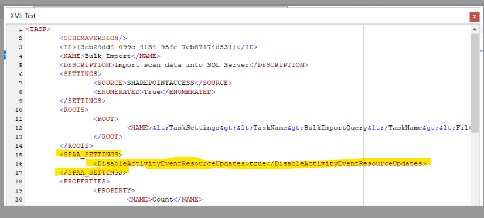

Title:
KB_HOTFIX_stealthaudit-hotfix-11.6.0.038
Summary: SPAC Bulk Import - Performance Enhancement to eliminate updating activity events
Submitted by:
Michael Burrofato
Affected Versions:
11.6
Affected Module:
SPAA
Dev Ticket:
ADO Bug 343532
Resolved in Version:
KB Type:
Hotfix
Escalations
390550
Instructions:
1. Unblock the hotfix zip file in the windows property dialog, if an unblock button exists there.
2. Close all instances of StealthAUDIT (check task manager under processes for all users)
3. Update all DC files in your %SAInstallDir%DC folder
4. Update all PrivateAssemblies files in your %SAInstallDir%PrivateAssemblies folder.
5. Update all Agent files in your %SAInstallDir%Agent folder
6. Update all InstantSolution files in your %SAInstallDir%InstantSolutions folder
7. Update all Jobs files in your %SAInstallDir%Jobs folder
8. If using Agent mode for scans, please install SPAA Agent version 11.6.0.23 or higher to avoid compatibility issues. (This is only necessary for SP On-Prem, not SharePoint Online)
9. A hidden option was added to SPAC bulk import to enhance performance. To enable this,
modify the job xml of the SPAC bulk import job and add the following:

https://releases.netwrix.com/products/stealthaudit/11.6/stealthaudit-hotfix-11.6.0.038.zip